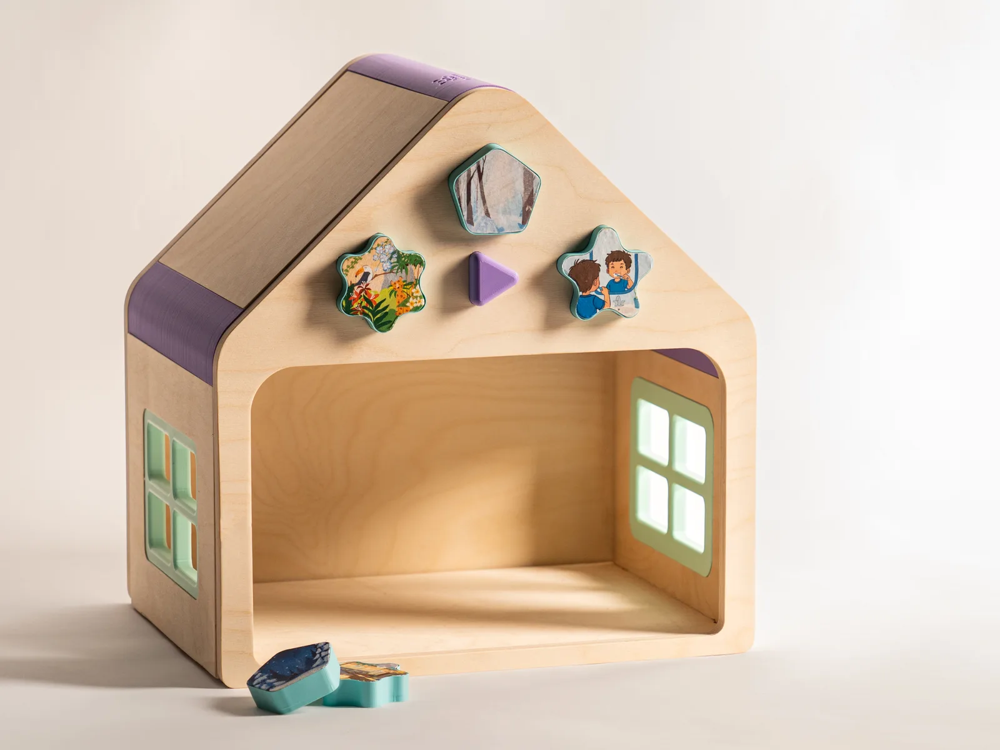
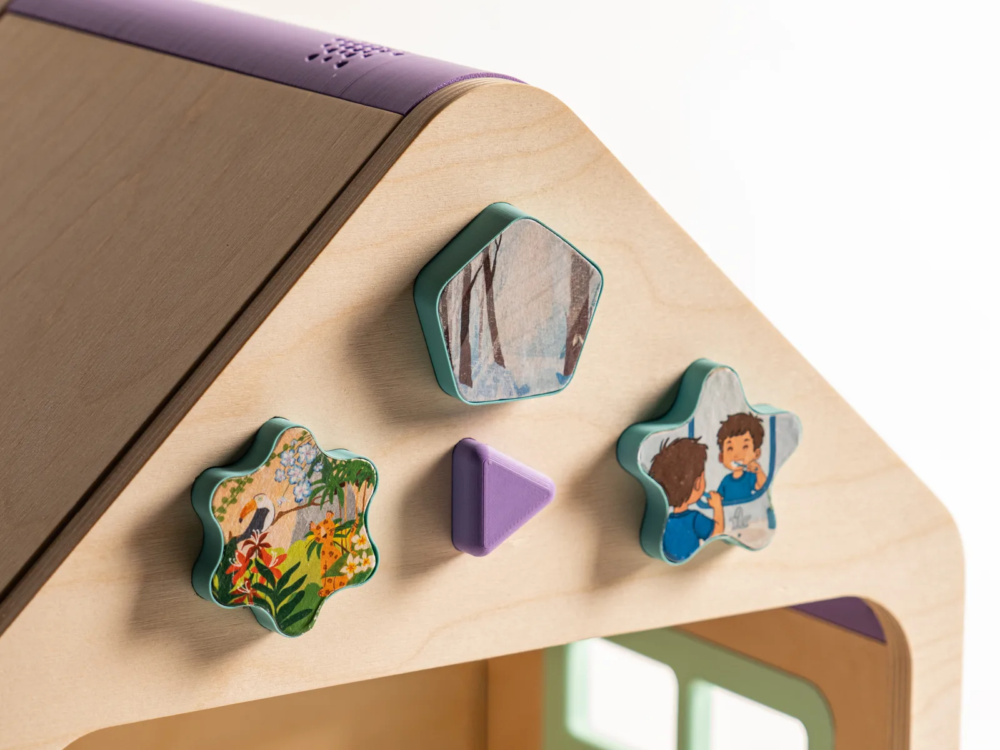
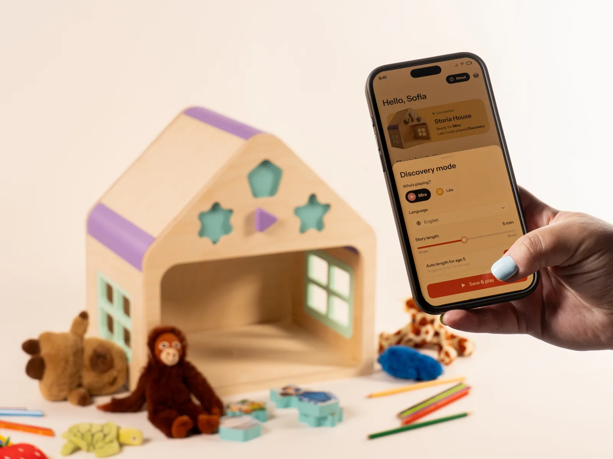
Storia
Storia is a screen-free storytelling toy for children aged 2–6. Children put their own toys inside a wooden house, add story tiles if they want, press play, and hear a story made in real time around what they chose. The child never talks to the AI, physical interaction is the only input.
Brief
Storia started as ToyTales, a one-week course project.
We kept going and turned it into our master's thesis, and after graduating into a product we're
preparing to produce, supported by an Innosuisse coaching grant.
This page covers the research behind it, how it plays, the third prototype,
testing with children, new story tiles, and redesigning the house so it can actually be manufactured.
My part
Research was done together with my co-founder. I built all three prototypes (CAD, CNC milling, 3D printing, wiring and soldering), I'm redesigning the house and tiles for production, and I lead the visual identity.
Research
We started from a simple problem: most storytelling toys only let children listen, and most AI toys put a screen or a chatbot in front of them. We wanted children to shape the story through play, with AI staying in the background.
What we did, together:
- 50 parent survey responses and 10 in-depth parent interviews
- 5 expert interviews (education, child development, AI safety, children's literature) and 4 educators during playtime
- A co-creation workshop with designers and parents at the Junior Design Research Conference
- Public testing at Bern Design Festival, World Usability Day Brugg and JDRC
- Testing sessions with 60+ children in daycares, at festivals and at home
What came out of it:
- Children aged 2–6 learn by doing, they test every limit of a new object before they listen
- Listening alone is the lowest level of engagement, children learn more when they can change the story
- Parents worry about AI being unpredictable as much as about privacy
- Nothing on the market combined physical play, AI-made stories and the child actively taking part
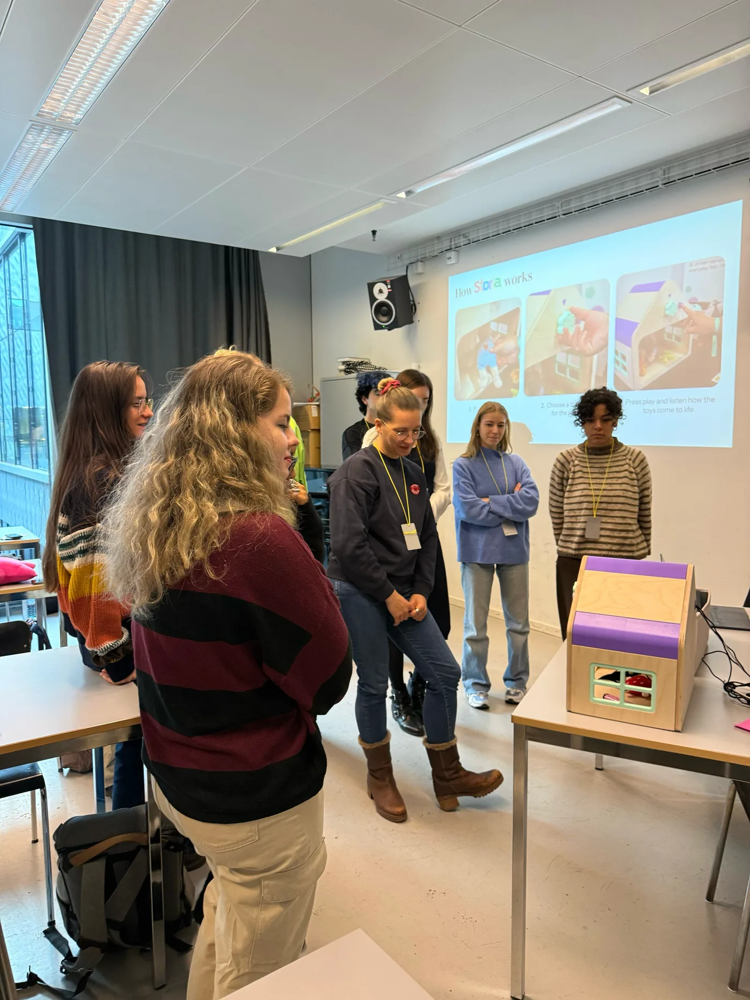
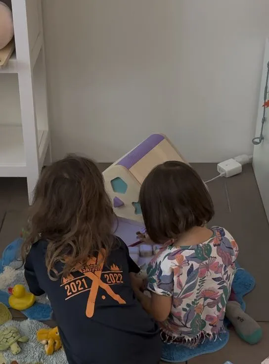
How it plays
A child puts a toy inside the house, adds up to three story tiles for the place, scenery and topic, and presses play. The toy becomes the main character, and every story is new, even with the same toys and tiles. Parents pick one of four modes in the Storia app:
- Independent play, for quiet moments or bedtime
- Family story time, the story pauses so the adult and child choose what happens next
- Shared play, for groups, with turn-taking inspired by how educators do it in kindergartens
- Multilingual, one story in two languages
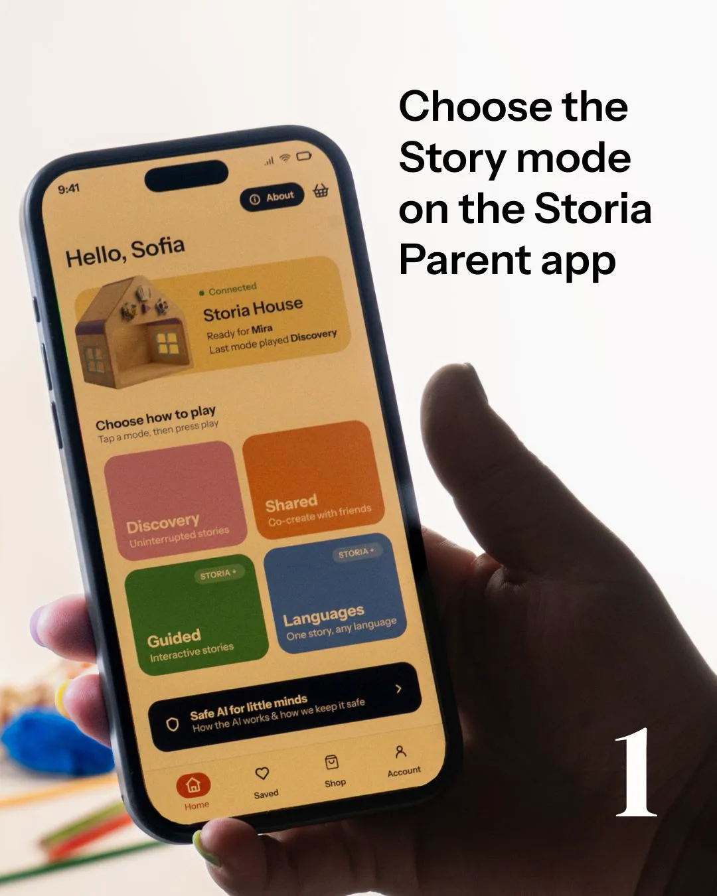
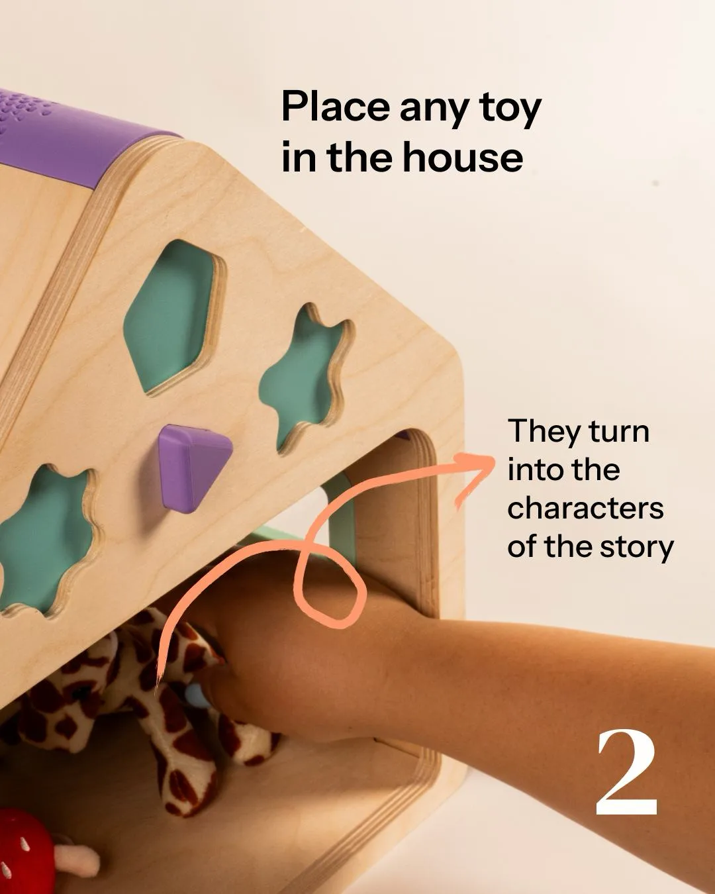
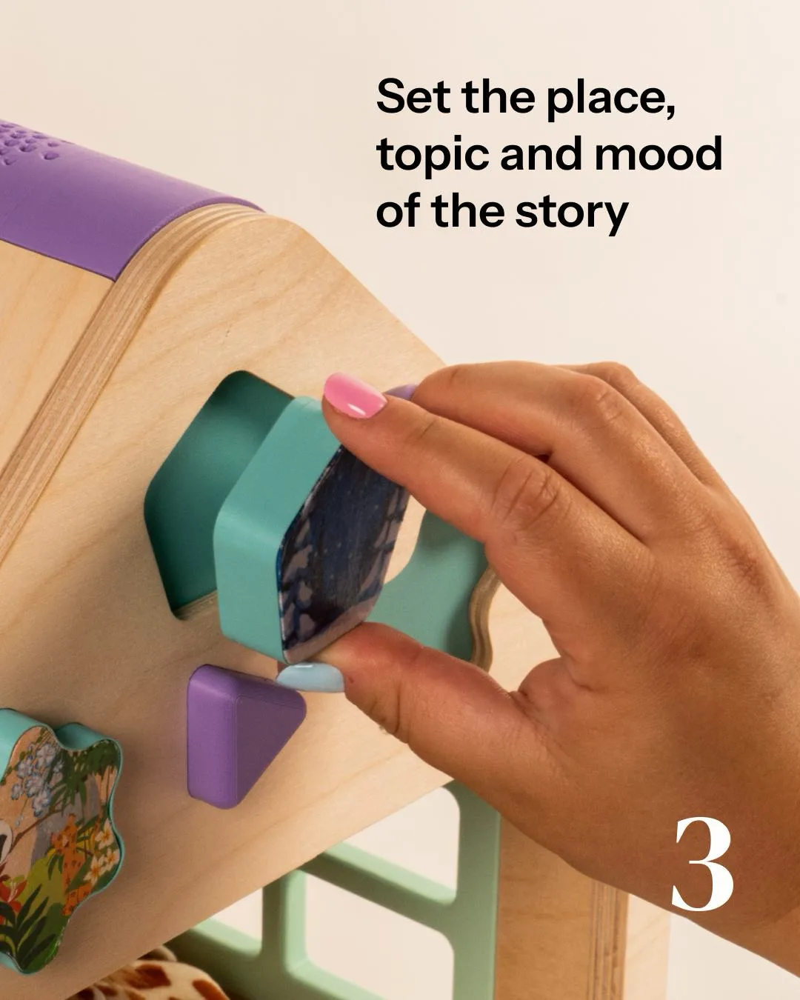
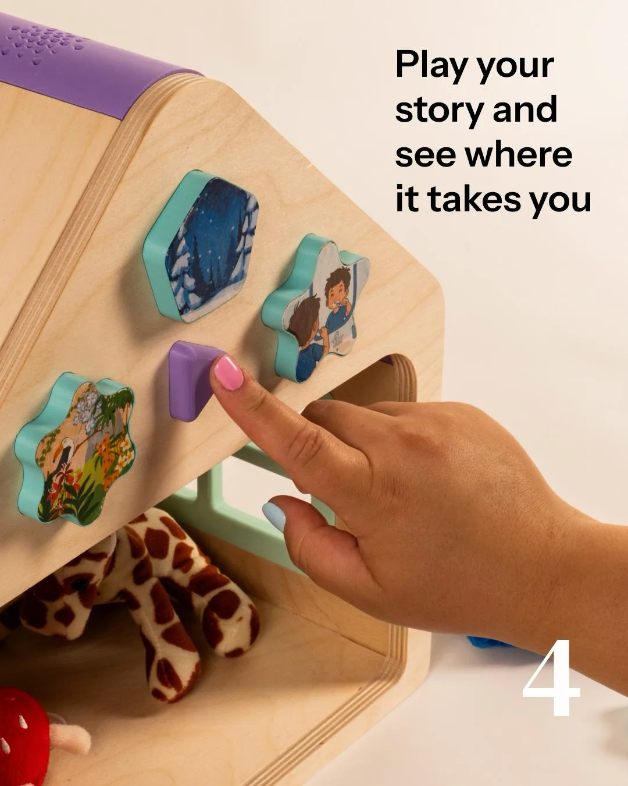
In family and shared play the story ends with an open prompt, like acting it out with the toys or building the next scene, so the play keeps going after the story is over.
Safe by design
One of the biggest risks with AI and children is the child thinking the AI is a friend. So in Storia, physical play is the only input:
- No microphone, Storia never listens and the child can't talk to it
- One photo is taken only when play is pressed, to recognise the toy, then deleted
- Only the child's age and language are needed
- Storia tells stories, it doesn't chat, praise or act like a companion
- Every story is checked twice, the photo before and every sentence before it's spoken, with age-based rules fixed in the system
Third prototype
The third prototype is the one we tested the most. Birch wood with less PLA, NFC readers for the story tiles, light feedback and a proper place for the speaker. Power and volume moved to the back, so adults control them and children only see the play button.
What changed from prototype 2:
- Story tiles with NFC tags replaced the switch for choosing a theme
- A clear click when the button is pressed, small status lights while the story is being made
- Input lock, so pressing play again and again doesn't start ten stories
- Tested in homes, bilingual daycares and play sessions, including a one-week test without us there
Three prototypes, one year
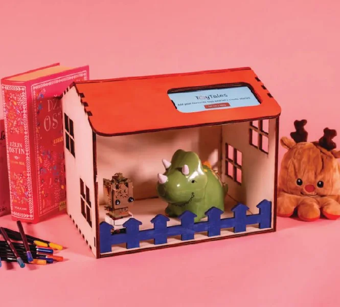
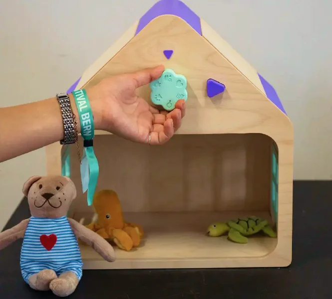
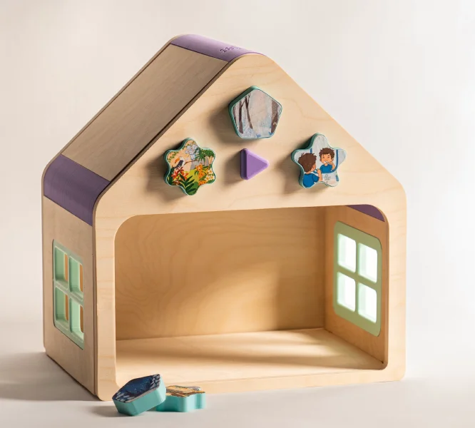
| Prototype 1 | Prototype 2 | Prototype 3 | |
|---|---|---|---|
| Build | Plywood house, phone on the roof, built in under a week | Birch and PLA, switch and play button, electronics inside | Birch, less PLA, NFC tile readers, light, speaker place |
| Tested at | University | Festivals, conferences, three daycares | Homes, bilingual daycares, play sessions |
| What it showed | The concept worked, the screen had to go | Needed clearer feedback and less waiting | Children test every limit, it has to survive that |
Testing with children
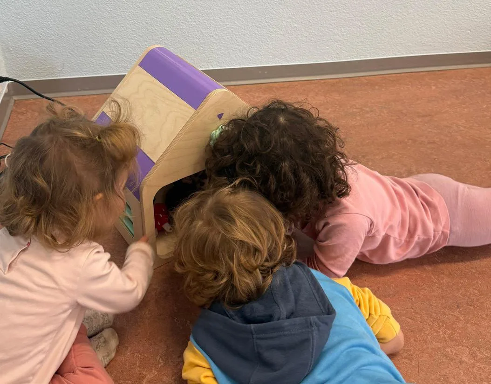
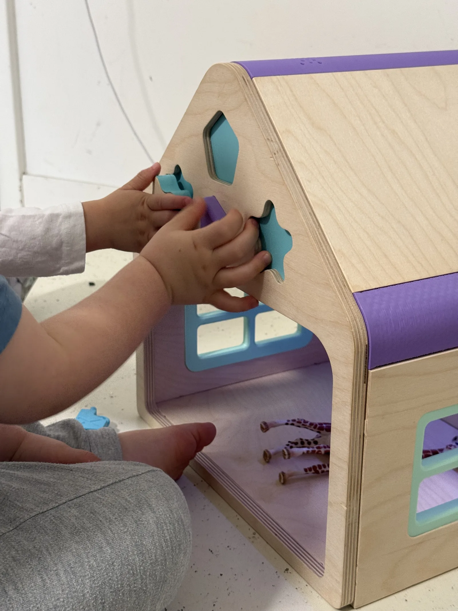
Some decisions came straight from watching children play: the tiles borrow from shape sorters because kids loved putting things into openings, and the house is sized around the toys they actually brought.
Story tiles
After the thesis I redesigned the tiles. There are three types, scenery, place and topic, and each one has its own shape that only fits its own slot on the roof, so children can't put a tile in the wrong place.
- Tested five new shapes before choosing
- 12 mm thick with an NFC tag inside
- Shapes have to stay readable and easy to hold for small hands
- Illustrations and print files with bleed for the tile faces
Sized for small hands
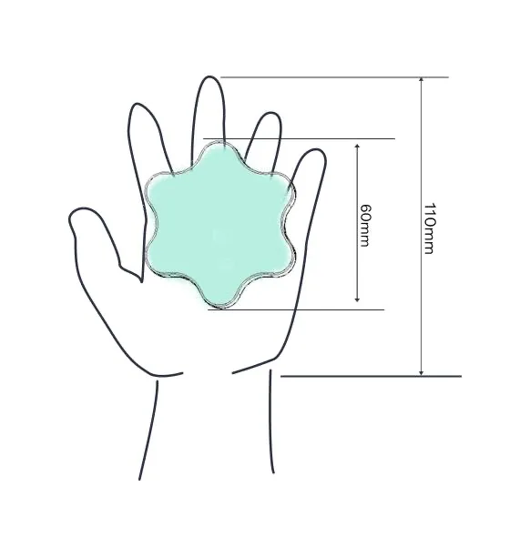
Designing the house for production
The prototype house was too expensive to machine. In October 2026 I started the house again from scratch in Fusion 360, this time designing for CNC from the beginning: 12 mm solid birch, flat parts, fewer pockets and fillets, and tabs and slots so the base locates itself.
I split the cut file by tool and depth so a workshop can run it in order, from the hold-down screw holes first to the outlines with tabs last, and I'm comparing quotes from Swiss and Eastern European CNC workshops.
New house in Fusion 360
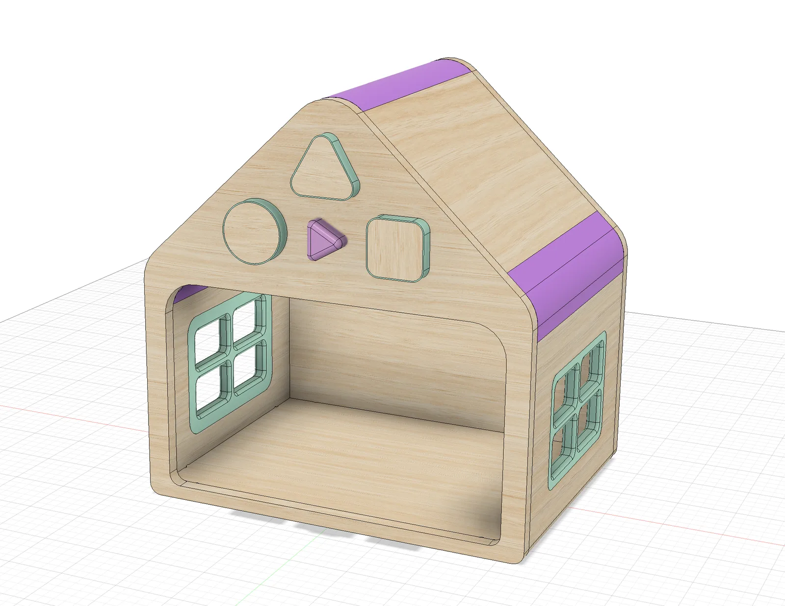
Electronics
Inside the third prototype: three NFC readers on one shared SPI bus, an I²S amplifier and speaker, a camera, status LEDs, four buttons and USB-C power. The readers kept interfering with each other until I added a pull-down resistor on MISO and decoupling capacitors on every module.
Now, for the first batch:
- Moving from Raspberry Pi to a cheaper board that's actually in stock
- A custom header PCB with the modules attached, a fully custom board later
- A rechargeable battery at the back, because children in testing kept unplugging the cable
- Collecting supplier documents for CE certification
Learnings
Going from a prototype that works to a product someone can make a hundred times is a different job, and most of it happens in CAD files and supplier emails.
- Children test every limit, so the toy has to handle anything they try
- Some features come from watching play, the shape-sorter tiles and the battery both did
- Designing for CNC from the start is cheaper than fixing a prototype file later
- Wood in the way of the NFC antenna changes everything about read range
Prototype 3
Storia, out in the world
Make sure to check this out!
The Playground is where I explore my passions.
About Me is where you'll find who's the person behind the works.
Not sure where to next?
Check my projects
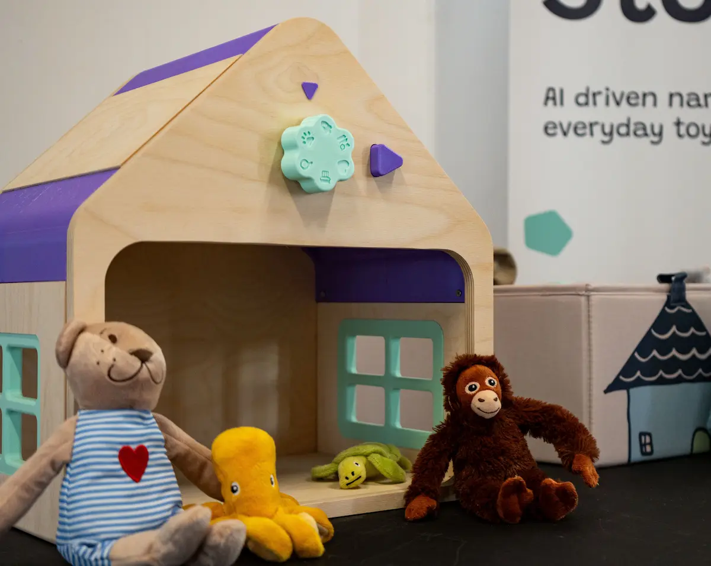
ToyTales
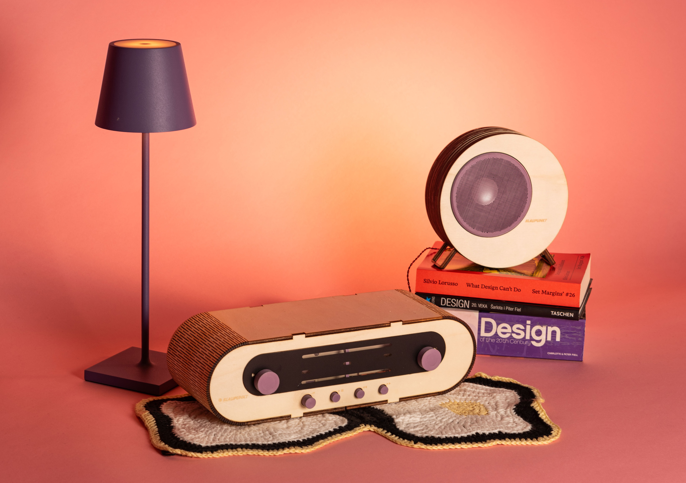
Blaupunkt Pop 70 Remake
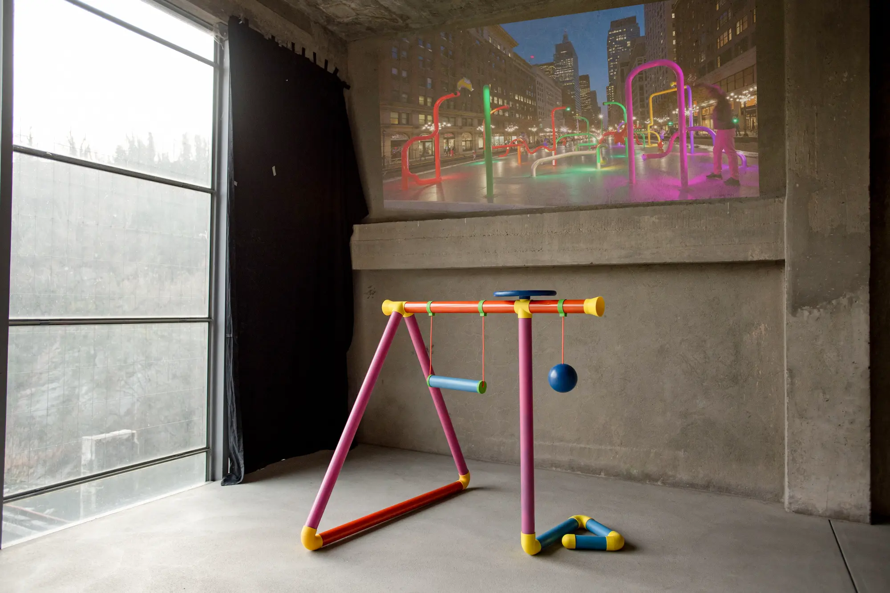
Tubi
Like what you see? Just want to connect?
Let’s build something meaningful together :)
Copied!